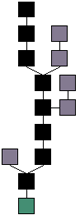

区块链是一种新型去中心化协议，能安全地存储比特币交易或其它数据，信息不可伪造和篡自动执行智能合约，无需任何中心化机构的审核。交易既可以是比特币这样的数字货币，也权、股权、版权等数字资产，区块链技术解决了拜占庭将军问题，大大降低了现实经济的信会计成本，重新定义了互联网时代的产权制度。
区块链（Blockchain）是由节点参与的分布式数据库系统，它的特点是不可更改，不可伪造，也可以将其理解为账簿系统(ledger)。它是比特币的一个重要概念，完整比特币区块链的副本，记录了其代币（token）的每一笔交易。通过这些信息，我们可以找到每一个地址，在历史上任何一点所拥有的价值。
区块链是由一串使用密码学方法产生的数据块组成的，每一个区块都包含了上一个区块的哈希值（hash），从创始区块（genesis block）开始连接到当前区块，形成块链。每一个区块都确保按照时间顺序在上一个区块之后产生，否则前一个区块的哈希值是未知的。这些特征使得比特币的双花（double-spending）非常困难。区块链是比特币的核心创新
区块链概念的出现，首先是在中本聪的比特币白皮书中提到的，但是以工作量证明链（proof-of-work chain）的形式而存在，以下是中本聪对区块链概念的描述：
时间戳服务器通过对以区块(block)形式存在的一组数据，实施随机散列而加上时间戳，并将该随机散列进行广播，就像在新闻或世界性新闻组网络（Usenet）的发帖一样 。显然，该时间戳能够证实特定数据必然于某特定时间是的确存在的，因为只有在该时刻存在了才能获取相应的随机散列值。每个时间戳应当将前一个时间戳纳入其随机散列值中，每一个随后的时间戳都对之前的一个时间戳进行增强(reinforcing)，这样就形成了一条链（Chain）。
节点始终都将最长的链视为正确链，并持续工作和延长它。如果有两个节点同时广播不同版本的新区块，那么其他节点在接收到该区块的时间上，将存在先后差别。当此情形，他们将在率先收到的区块基础上进行工作，但也会保留另外一条链，以防后者变成最长链。该僵局（tie）的打破，要等到下一个工作量证明被发现，而其中的一条链被证实为是较长的一条，那么在另一条分支链上工作的节点将转换阵营，开始在较长的链上工作。
比特币钱包的功能依赖于与区块链的确认，一次有效检验称为一次确认。通常一次交易要获得数个确认才能进行。轻量级（SPV ）比特币钱包, 其客户端在本地只需保存与用户可支配交易相关的数据，而不会存储完整的区块链。
区块链技术是众多加密数字货币的核心，包括比特币、以太坊、莱特币、狗狗币等。维护区块链的方式，有 工作量证明 （proof-of-work）、权益证明(proof-of-stake)等。
区块链体系结构的核心优势包括：
数据通过称之为区块(block)的文件，永久记录在数字货币网络上。它们好比是一个股票交易账本。新的区块会被添加到记录（区块链）的末端，而且一旦书写就很难修改或移除。

| 大小 | 字段 | 描述 |
|---|---|---|
| 4字节 | 区块大小 | 用字节表示的该字段之后的区块大小 |
| 80字节 | 区块头 | 组成区块头的几个字段 |
| 1-9 （可变整数） | 交易计数器 | 交易的数量 |
| 可变的 | 交易 | 记录在区块里的交易信息 |
区块头由三组区块元数据组成。首先是一组引用父区块哈希值的数据，这组元数据用于将该区块与区块链中前一区块相连接。第二组元数据，即难度、时间戳和nonce，与挖矿竞争相关 。第三组元数据是merkle树根（一种用来有效地总结区块中所有交易的数据结构）。
| 大小 | 字段 | 描述 |
|---|---|---|
| 4字节 | 版本 | 版本号，用于跟踪软件/协议的更新 |
| 32字节 | 父区块哈希值 | 引用区块链中父区块的哈希值 |
| 32字节 | Merkle根 | 该区块中交易的merkle树根的哈希值 |
| 4字节 | 时间戳 | 该区块产生的近似时间（精确到秒的Unix时间戳） |
| 4字节 | 难度目标 | 该区块工作量证明算法的难度目标 |
| 4字节 | Nonce | 用于工作量证明算法的计数器 |
比特币区块链的第一个区块，创建于2009年，我们称之为创世区块。它是比特币区块链里所有区块的共同祖先，这意味着你从任一区块，循链向后回溯，最终都将到达创世区块。
每一个节点都“知道”创世区块的哈希值、结构、被创建的时间和里面的一个交易。因此，每个节点都把该区块作为区块链的首区块，从而构建了一个安全的、可信的区块链的根。
在chainparams.cpp里可以看到创世区块被编入到比特币核心客户端里。
创世区块的哈希值为：
0000000000 19d6689c085ae165831e934ff763ae46a2a6c172b3f1b60a8ce26f
在命令行使用比特币核心客户端：
$ bitcoindgetblock 000000000019d6689c085ae165831e934ff763ae46a2a6c172b3f1b60a8ce26f{ "hash":"000000000019d6689c085ae165831e934ff763ae46a2a6c172b3f1b60a8ce26f", "confirmations":308321, "size":285, "height":0, "version":1, "merkleroot":"4a5e1e4baab89f3a32518a88c31bc87f618f76673e2cc77ab2127b7afdeda33b", "tx":["4a5e1e4baab89f3a32518a88c31bc87f618f76673e2cc77ab2127b7afdeda33b"], "time":1231006505, "nonce":2083236893, "bits":"1d00ffff", "difficulty":1.00000000, "nextblockhash":"00000000839a8e6886ab5951d76f411475428afc90947ee320161bbf18eb6048"}创世区块包含一个隐藏的信息。在其Coinbase交易的输入中包含这样一句话“The Times 03/Jan/2009 Chancellor on brink of second bailout forbanks.”这句话是泰晤士报当天的头版文章标题，引用这句话，既是对该区块产生时间的说明，也可视为半开玩笑地提醒人们 , 一个独立的货币制度的重要性，同时告诉人们随着比特币的发展，一场前所未有的世界性货币革命将要发生。该消息是由比特币的创立者中本聪嵌入创世区块中。
诚实矿工只创建最长有效链上的最新区块。“长度”（Length）指区块链的累计计算难度，而不是是区块数目。当包括在链中的所有区块以及交易都有效，且是从创世区块开始的链，才是被我们承认的有效区块链。
对于区块链中的任意一个区块，到达创世块的路径只有一条。然而，从创世块开始，会有分叉的情况出现。当创建两个区块的时间差只有几秒时，经常会创建出一个分叉区块。当发生这种情况时，节点就会在他们最先接收到的那个区块上创建区块。无论哪一个区块包含在下一个区块中，它都会成为主链的一部分，因为这条链更长。
短链（无效链）中的区块没有什么作用。当比特币客户端切换至另外一条更长的区块链时，短链中的所有有效交易区块都重新添加到序列交易池中，且会包含在下一个区块中。短链中的区块奖励不会呈现在最长的区块链中，因此实际上他们是有损失的，这就是为什么需要网络强制的100个区块的成熟时间来让产生存在。
在短链中的区块，我们通常称之为“孤儿块”（orphans）。这是因为，在长链中这个生成交易并没有父系区块，因为这些生成交易在交易PRC列表中显示为孤儿。一些矿池误解这些信息，声称他们的区块是”孤儿“。事实上，这些区块都有父系区块，而且甚至可能有子系。
公链，是指全世界任何人都可读取、发送交易且能获得有效确认的共识区块链。公链的安全由工作量证明机制（pow）或权益证明机制(pos)等方式负责维护。它们是以经济奖励与加密数字验证相结合的方式而存在的，并遵循着一般原则：每个人从中可获得的经济奖励，与对共识过程作出的贡献成正比。这些区块链通常被认为是“完全去中心化”的。
共同体区块链，是指其共识过程受到预选节点控制的区块链；例如，有15个金融机构组成一个共同体，每个机构都运行着一个节点，而且为了使每个区块生效需要获得其中10个机构的确认。区块链或许允许每个人都可读取，或者只受限于参与者，或走混合型的路线，例如区块的根哈希及其API（应用程序接口）对外公开，API可允许外界用来作有限次数的查询和获取区块链状态的信息。这些区块链可视为“部分去中心化”。
完全私有的区块链 , 是指其写入权限仅在一个组织手里的区块链。读取权限或者对外开放，或者被任意程度地进行了限制。相关的应用囊括数据库管理、审计、甚至一个公司，但在很多的情形下，公共的可读性并非是必须的。
关于没有原生代币的系统，是否能被称为区块链，仍然有着很大的争议。一些人认为，没有代币的区块链，可以一种分布式多版本并发控制(MVCC)数据库的形式而存在。多版本并发控制，可防止两笔交易在数据库中修改一个单一列，而区块链，则是阻止两笔交易在区块链中的单个输出（ output）。
共同体区块链结合了公链的“低信任”和私链的“单一高度信任” , 提供了一种混合的模式，而私链可以更精确地描述为带有一定程度数字加密功能，可管理（permissioned）的传统中心化系统。
公链特点：
私链特点：
区块链技术作为数字货币的底层技术，已引起了金融世界的高度重视，包括高盛、摩根大通、汇丰银行、花旗银行、纽约梅隆银行、巴克莱银行、瑞银（UBS）、苏格兰皇家银行、摩根士丹利在内的众多金融机构，均与区块链公司进行了合作，研究区块链技术在金融市场的应用。世界经济论坛更是大胆预测，到2027年世界GDP的10％将被存储在区块链网络上。
版权所有 Copyright © 区块链技术创新与应用 备案序号：京ICP备16053305号-2